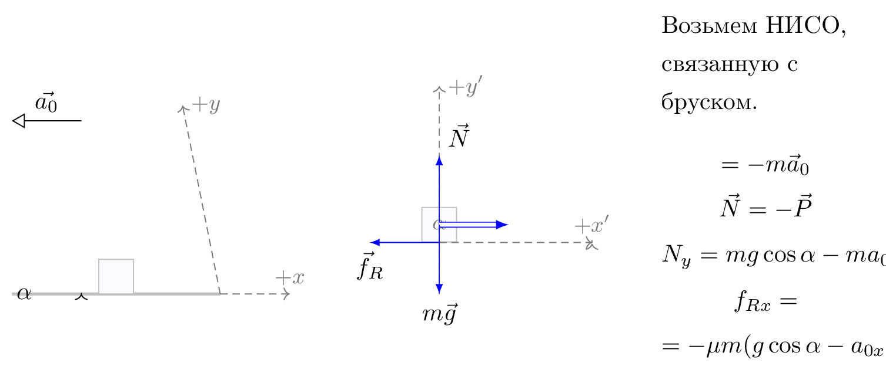

pre.tex
\documentclass[tikz]{standalone}\input{pre.tex}\begin{document}\begin{tikzpicture}[
axis/.style={densely dashed,black!60,font=\small},
force/.style={>=latex,draw=blue,fill=blue},
% m/.style={rectangle,draw,fill=lightgray,minimum size=0.5cm,thin},
m/.style={draw=black!30, rectangle,draw,thin, fill=blue!2, minimum size=0.5cm},
m/.style={draw=black!30, rectangle,draw,thin, fill=blue!2, minimum size=0.5cm},
interface/.style={draw=gray!60,
postaction={draw=gray!60,decorate,decoration={border,angle=-135,
amplitude=0.3cm,segment length=2mm}}},
plane/.style={draw=black!30, very thick, fill=blue!5},
string/.style={draw=black, thick},
pulley/.style={thick},
]
\matrix[column sep=0.5cm] {
\begin{scope}[]
\draw[->,>=open triangle 60] (1,1.5) -- node[above,pos=0.5] {$\vec{a_0}$} (0,1.5);
%% Sketch
\draw[plane] (0,-1) coordinate (base)
-- coordinate[pos=0.5] (mid) ++(\iangle:3) coordinate (top)
|- coordinate (d) (base) -- cycle;
\path (mid) node[m,rotate=\iangle,yshift=0.25cm] (m) {};
% \draw[pulley] (top) -- ++(\iangle:0.25) circle (0.25cm)
% ++ (90-\iangle:0.5) coordinate (pulley);
% \draw[string] (m.east) -- ++(\iangle:1.5cm) arc (90+\iangle:0:0.25)
% -- ++(0,-1) node[m] {};
\draw[->] (base)++(\arcr,0) arc (0:\iangle:\arcr);
\path (base)++(\iangle*0.5:\arcr+5pt) node {$\alpha$};
{[axis,->]
\draw (d) -- (35:3) node[right] {$+y$};
\draw (d) -- ++(1,0) node[above] {$+x$};
% Indicate angle. The code is a bit awkward.
}
\end{scope}
&
\begin{scope}[rotate=\iangle]
\node[m,transform shape] (m) {};
% Draw axes and help lines
{[axis,->]
\draw (0,-1) -- (0,2) node[right] {$+y'$};
\draw (m.south) -- ++(2.2,0) node[above] {$+x'$};
% Indicate angle. The code is a bit awkward.
\draw[solid,shorten >=0.5pt] (\down-\iangle:\arcr)
arc(\down-\iangle:\down:\arcr);
\node at (\down-0.5*\iangle:1.3*\arcr) {$\alpha$};
}
% Forces
{[force,->]
% Assuming that Mg = 1. The normal force will therefore be cos(alpha)
\draw (m.center) -- ++(0,{cos(\iangle)}) node[above right] {$\vec{N}$};
\draw (m.south) -- ++(-1,0) node[below, pos=1] {$\vec{f}_R$};
% \draw (m.east) -- ++(1,0) node[above] {$T$};
}
\end{scope}
\draw[force,double equal sign distance=2pt,->] (m.center) -- ++(1,0) node[below, pos=1.5] {$\FIN$};
% Draw gravity force. The code is put outside the rotated
% scope for simplicity. No need to do any angle calculations.
\draw[force,->] (m.center) -- ++(0,-1) node[below] {$m\vec{g}$};
&
\node[draw=none,text width=3cm, line width=0mm] at (0,0.5) {
Возьмем НИСО, связанную с бруском.
\begin{gather}
\nonumber \FIN=-m\vec{a}_0\\
\nonumber \vec{N}=-\vec{P}\\
\nonumber N_y={}mg\cos\alpha-ma_{0x}\sin\alpha\\
\nonumber f_{Rx}=\\
\nonumber = -\mu{}m(g\cos\alpha-a_{0x}\sin\alpha)
\end{gather}
};
\\
};
\end{tikzpicture}\end{document}